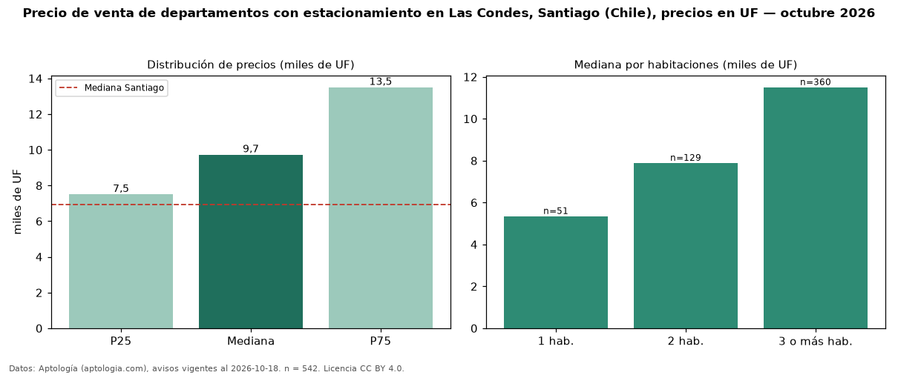

Precio de venta de departamentos con estacionamiento en Las Condes, Santiago (Chile), precios en UF — octubre 2026
Con 542 avisos vigentes, el precio mediano de departamentos con estacionamiento en venta en Las Condes, Santiago (Chile) es UF 9.725. Frente a la mediana de todos los departamentos en venta de Las Condes (UF 10.700, n = 2.773), queda 9 % por debajo; este segmento reúne el 20 % de esos avisos. Por metro cuadrado, la mediana es UF 84,38/m² (n = 523), 4 % por debajo del conjunto de referencia (UF 87,61/m²). El área mediana anunciada es 119 m². El segmento con más oferta es el de 3 o más habitaciones (360 avisos, mediana UF 11.500); pasar de 1 habitación a 3 o más habitaciones cambia la mediana +115 %. La mitad central de los avisos va de UF 7.500 a UF 13.500 (razón 1,8), una dispersión moderada. La mediana de todos los departamentos en venta de Santiago es UF 6.950 (+40 % de diferencia). Datos: Aptología (aptologia.com), CC BY 4.0 — https://www.aptologia.com/cl/venta/santiago/las-condes. Archivos: PDF, CSV con las cifras y gráfica PNG.

| Avisos únicos | 542 |
|---|---|
| Percentil 25 | COP 7.500 |
| Mediana | COP 9.725 |
| Percentil 75 | COP 13.500 |
| Mediana por m² | COP 84 |
Fuente: avisos vigentes de portales inmobiliarios recopilados por Aptología, deduplicados (mínimo 30 avisos únicos por celda). Precios pedidos, no cerrados. Fecha: 2026-10-18.